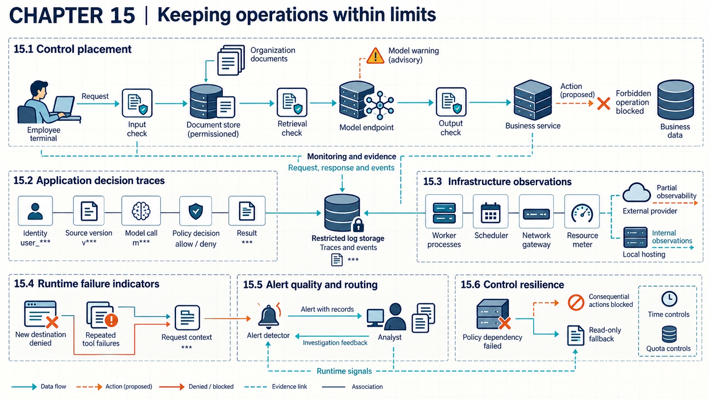

15 Failures during live operation
Release evidence describes one tested configuration, while live requests, data, suppliers, and components keep changing around it.

A system may leave its tested limits without anyone deploying a new version. Users may change, retrieved content may change, a supplier may update a model behind an API, a credential may expire, a policy service may slow down. Traces and alerts supply partial evidence about whether the release limits still hold through those changes. Each record shows what its own observation point captured. A missing record stays a gap rather than proof of absence.
Assume the organization operates the application with organization-side traces, while a provider-operated model supplies only the records actually available, such as request identifiers and supplier reports. If the organization also operates the model, its serving and infrastructure records can add observations that an external provider may not expose.
15.1 Observing the executed path
One request can pass through retrieval, a model call, policy checks, tool arguments, external results, and a final response. An application trace links that request to the identities, model call, and retrieved sources used. It also records policy decisions, tool arguments, external results, and the final response. It covers attempted operations as well as completed ones. Correlation identifiers connect those events across services. The trace itself has a security boundary, because prompts, retrieved text, outputs, and tool results may carry sensitive information.
NIST log-management guidance treats generation, transfer, storage, access, analysis, retention, and disposal as one managed process.1 The NIST incident-response profile calls for logs to be generated and available for continuous monitoring.2 The 2006 log guidance predates AI-specific fields for prompts, retrieved chunks, model versions, tool calls, and policy decisions. Neither source supports recording every sensitive value by default.
The working design records stable identifiers and decisions by default. It keeps sensitive payloads only when an investigation or operational need and an access rule justify them. Encryption, field-level removal, restricted access, and retention limits then follow the data classification. When received media carries a C2PA Content Credential, the trace can record the manifest validation result, signer, content binding, and claimed edit history. A valid result supports those signed statements under the accepted trust chain. A missing or invalid credential does not prove the media is synthetic. A valid credential does not prove its content is true.3 Coverage is then measured as expected events received out of all expected events in sampled requests. Late and unreadable records are counted separately. Rich traces cost storage and widen privacy exposure. Dropped events, clock skew, or reused identifiers can break reconstruction. Complete expected events still do not prove every relevant action emitted a log.
15.1.1 Control placement
Runtime controls differ in what they can actually stop. An advisory check produces information for a model or person. A blocking check sits at an enforcement point and can prevent the protected operation. Control placement identifies the input, retrieval, output, or action boundary where a decision is made and the object that decision protects.
Complete mediation calls for checking access where each protected object is used. Least privilege keeps the rights of each process narrow. Saltzer and Schroeder set out both principles.4 The NIST Generative AI Profile recommends comparing outputs with organizational risk limits. It also recommends monitoring deployed models and responding when performance falls outside defined limits.5 The accuracy of a particular filter or detector still needs testing under the deployment’s traffic and failure conditions.
In the reference design, the application screens incoming content and checks retrieval permissions before context assembly. It then validates structured output before the business service authorizes the resolved action. A model warning supplies advice. A service can enforce a denial before performing an operation. Each control record states its input, outcome, fail state, and protected action. Tests submit both allowed and forbidden requests. They count forbidden operations blocked out of forbidden operations attempted. They also count legitimate operations completed out of legitimate operations attempted. Those separate denominators expose a control that appears effective because it blocks everything. Added checks add latency and can reduce availability when a dependency fails. An alternate action path, or a warning mistaken for enforcement, sits outside the tested boundary. A passing control at one point does not prove later components preserve its decision.
15.1.2 Infrastructure observations
Application logs record attempted and completed operations at the application’s own observation points. Infrastructure observations show processes, containers, network connections, accelerator use, storage access, scheduler events, control-plane activity, and billing. A tool call can look normal in the application trace while the worker contacts an unexpected destination or consumes unusual resources. Neither layer is ground truth by itself. Each covers its own observation points and each can miss records the other kept, so the joined view must mark which points reported and which gave no data.
NIST continuous-monitoring guidance separates organization, mission or business process, and information-system monitoring levels. It describes a strategy and program for collecting, analyzing, and reporting security information.67 That program model does not supply current telemetry fields for accelerators, hosted models, or token billing. In the reference design, the application passes its correlation identifier to the worker. Telemetry collectors associate that identifier with job, process and network events where the platform supports the link. Provider-side records may remain unavailable.
Example
Tracing one request across layers. Suppose live retrieval-based inference handles request req-882 from employee E17 by starting worker job job-417. The application trace records one model call and no approved tool action.
| Time | Source | Correlation record | Observed result |
|---|---|---|---|
| 10:14:02 | application | req-882, model call resp-903 |
response returned |
| 10:14:03 | scheduler | req-882, job-417 |
worker started |
| 10:14:05 | network control | job-417, destination 203.0.113.25 |
connection denied |
| 10:14:06 | process monitor | job-417, process count 29 to 33 |
limit exceeded, newest process stopped |
| 10:14:08 | application | req-882 |
request marked incomplete |
Conclusion. Joining on the request and job identifiers connects a normal model response to unexpected worker behavior with two blocking decisions. The infrastructure controls observed and stopped those events in this trace without explaining the worker’s intent or proving that no other connection succeeded.
Host sensors, network controls, and the scheduler each observe or enforce their own states, while the join service checks request, job, workload, and time links before correlating them. The measurement reports joined expected events out of all events required by the trace design. Collection consumes storage and processing and may expose operational detail. Missing provider records, clock errors, or an uninstrumented host leave explicit gaps in the joined view.
15.2 Attacks, faults, and changed use
A single alarming signal can have several innocent explanations. A runtime indicator is a measurable condition associated with a tested failure path. Examples include access to a forbidden resource, a new external destination, repeated failed tool calls, an abrupt resource increase, or use of stale retrieved content. An indicator needs enough request and system context to separate a likely boundary violation from ordinary variation.
NIST continuous-monitoring guidance says monitoring should support assessment of the security impact of changes and response to findings.8 The NIST Generative AI Profile recommends evaluating post-deployment monitoring. It also recommends comparing behavior with defined risk limits.9 Neither fixes detection rates, base rates, or thresholds for prompt injection, retrieval poisoning, or unusual tool use. Those stay deployment decisions with measured review.
Indicators can follow from the threat model, release tests, known faults or investigated incidents. For each indicator the design records the expected signal, threshold, required context, and response owner. A deployment still needs its own labeled outcomes and measurement population before it relies on an indicator’s precision. A forbidden-resource event counts as exact only when the resource identity and the policy version behind the decision are both resolved correctly. A resource spike needs a workload baseline to mean anything.
Example
Three causes for one spike. Suppose a worker’s accelerator use triples overnight against its baseline. The same signal fits a newly assigned batch workload, a runaway generation loop, and an attacker resubmitting expensive prompts. Reviewers check the job record, the submitting identity, and whether the prompts match assigned work before choosing among continued operation, a quota stop, or an incident declaration.
Conclusion. The spike alone selects no cause. The response team uses the job and identity records to choose a proportionate action. If those records do not distinguish the causes, the investigation remains open.
A detector with an enforcement connection allows ordinary processing, blocks a protected operation where it has that authority, and otherwise sends an alert. An advisory detector without such a connection can only report. A response team or another service must act on its alert. Its report keeps detected failures out of all confirmed failures beside valid alerts out of all alerts, with latency and review count alongside. Lower thresholds catch more variation at the price of interruptions and analyst work. Drift, sparse context, or activity kept below threshold can evade detection. Detector performance remains insufficient evidence that unobserved failures were absent.
15.3 Changed controls and permissions
A system can drift out of its release record without any single dramatic event. Configuration edits, rotated or expired identities, swapped model versions, refreshed retrieval snapshots, and changed data permissions each alter one assumption the release evidence rested on.
The live check compares the active configuration against the release record. It checks which model version serves traffic, which retrieval snapshot answers queries, which tool schemas and permission policies apply, and which identities hold which rights. A mismatch does not prove harm. Reviewers identify which conclusions depend on the change, as in release decisions (Chapter 14). Suppose a retrieval snapshot gains documents from an additional source. Earlier tests limited to the old source set do not establish retrieval and permission behavior for the added documents. Tests of that new path can fill the missing coverage. Unrelated evidence does not need to be discarded merely because the snapshot changed.
Supplier-side changes need the same treatment with less direct control. A provider model update, permission change, or notice of new data handling reaches the organization as a supplier statement to be checked against the deployment’s assumptions. It is not an automatically accepted continuation. Rotation and expiry deserve their own watch. A rotation may allow old and new credentials to overlap for a specified period. Expiry validation may allow a defined clock tolerance. Monitoring compares acceptance with those actual rules and with the deployment’s revocation behavior. Acceptance beyond an enforced expiry or withdrawal deadline is a different result from acceptance during an allowed overlap.
Measurement for this check counts configurations that match the release record out of all sampled live configurations, with mismatches grouped by affected model, snapshot, schema, or permission. Drift checks cost verification work and can delay rollout when every mismatch demands review. A supplier notice can arrive late, be incomplete, or omit an effective date, which leaves the mismatch undetected until the next comparison. Findings feed recovery in Chapter 16, where the team restores a known good configuration or retests the affected path before resuming full operation.
15.4 Missed failures and false alarms
Alert quality depends on detector performance and on how often the underlying event occurs. When true incidents are rare, even a sensitive detector can produce many false positives. Priority also weighs the protected asset, possible impact, confidence, and time available for containment. An alert without supporting context shifts reconstruction work onto the responder.
The NIST incident-response profile calls for detected events to be analyzed, correlated, placed in context, routed, and declared as incidents when criteria are met.10 It also calls for reports to be triaged, validated, categorized, and prioritized.11 The profile defines desired outcomes rather than an AI alert score or measured analyst workload. Precision and recall here keep the release-measurement meanings: real failures among alerts, and real failures caught among all real failures, as defined in release decisions (Chapter 14).
Example
Counting alerts when incidents are rare. Suppose one real incident hides among ten thousand routine events. A detector catches it but also flags ninety-nine ordinary events, producing one hundred alerts. Precision is 1 out of 100, or 1 percent. Observed recall is 1 out of 1. That single incident does not establish the detector’s sensitivity across a population.
Conclusion. The team has one hundred alerts to assess, of which ninety-nine concern routine events. Catching the incident does not establish that the resulting review workload is affordable. This sample illustrates why precision and review time matter alongside recall.
Each alert carries the trace identifier, triggering evidence, affected identity and asset, relevant control, severity basis, and responsible route. A grouping rule can combine repeated alerts about one event, but it needs a test for when events are actually the same. Grouping by a broad label can hide different affected users or targets. Investigation outcomes supply labels for later precision estimates and show how much review work each rule creates.
The routing service sets priority and destination from incident criteria, asset impact, confidence, and response ownership. Its denominator is every generated alert, with delivered, acknowledged, suppressed, escalated, and missed alerts counted separately. Faster escalation consumes analyst time and can interrupt low-risk work. Broad suppression, stale ownership, or unavailable communication can hide an urgent case. Delivery with acknowledgment does not prove correct triage.
15.5 Failures of protective services
Detectors, policy services, log sinks, and reviewers can themselves slow down or go dark. Control resilience concerns the system’s behavior in exactly that state. A fail-open path continues the protected operation when its check fails or is unavailable. A fail-closed path blocks that operation under the same condition. The choice turns on the safety and availability consequences of each state. Quotas, rate limits, time limits, and stopping rules can remain enforceable even when a secondary detector fails.
Saltzer and Schroeder’s fail-safe-defaults principle bases access decisions on permission so that failure does not silently broaden access.12 The NIST Generative AI Profile recommends monitoring deployed models and judging performance against defined limits with organizational risk tolerance.13 Neither decides the fail state for every service. Neither tests degraded policy, logging, approval, and detector components.
In the reference design, the action service blocks consequential changes when current authorization is unavailable. It may serve a clearly marked read-only fallback from approved data only when it can still establish the reader’s current access and the data and release scope remain allowed. A fallback that cannot check access can disclose data the reader should no longer see. It buffers minimal local evidence under the same protections as the primary store until the protected log path returns, then applies the normal retention rule. A total outage can still lose whatever was never written.
Fault injection tests the enforcing service with unavailable policy, detector, log, approval, and identity dependencies. The report counts protected operations that entered the intended fail state out of all injected failures. It measures clean availability separately. That result covers the injected dependencies and operations only. Fail-open and fail-closed describe each specific protected operation under its failed check. Fail-closed behavior can stop legitimate work, while fail-open behavior accepts more security risk. A shared dependency failure or an untested fallback can defeat both paths. The correct fail state does not prove the retained evidence is complete.
15.6 Operating limits and escalation
Thresholds only matter if crossing one changes what happens next. Error rates, cost movement, resource use, and unauthorized effects each get triggers agreed before deployment, drawn from the release thresholds and risk limits they monitor. The operating plan specifies the enforcing service, such as a scheduler that stops jobs exceeding a quota. It also assigns a response team and response time to alerts that need investigation.
Restriction narrows what the system may do: fewer permitted actions, tighter quotas, a smaller user or data scope. A pause stops the affected operation. Services that depend on the paused operation may also fail. The operating plan therefore identifies which essential functions can continue and which dependencies they still need. The read-only fallback continues only where its own access and scope checks still pass, not by default after every pause. The response team records the remaining risk of disruption and uses the joined records during recovery (Chapter 16). The responsible service owner decides whether operation resumes, resumes with restrictions, or remains stopped, using the recovery evidence. Spending and usage trends feed investment review in investment choices (Chapter 22).
Note
Chapter checkpoint. Suppose an application trace shows a normal answer with no approved tool action, while infrastructure records for the same request show denied external egress and a stopped process after the job exceeded its process limit. How should monitoring represent this event?
Answer. Join the application, scheduler, process, and network records with stable request and job identifiers. Preserve the model version, worker identity, destination, policy decisions, process counts, and final task state. Route an alert for unexpected egress plus resource-limit enforcement, with the joined records attached. The evidence supports a blocked abnormal path and an incomplete request. It does not establish attacker control or show that every route was observed.
Karen Kent and Murugiah Souppaya (2006), Guide to Computer Security Log Management, NIST SP 800-92, sections 2.1-2.3, 4.1-4.4, and 5.1-5.2, especially 5.1.2, “Log Storage and Disposal,” source. Checked 2026-09-16.↩︎
Alex Nelson, Sanjay Rekhi, Murugiah Souppaya, and Karen Scarfone (2025), Incident Response Recommendations and Considerations for Cybersecurity Risk Management: A CSF 2.0 Community Profile, NIST SP 800-61 Rev. 3, Table 2, PR.PS-04, printed p. 22, source. Checked 2026-09-16.↩︎
Coalition for Content Provenance and Authenticity (2025), C2PA Technical Specification, version 2.2, May 2025, sections 1.2-1.3, 14.2-14.3, and 15.12, source. Checked 2026-09-16. C2PA supplies signed statements and validation states. The organization then determines whether those statements support the proposed use.↩︎
Jerome H. Saltzer and Michael D. Schroeder (1975), “The Protection of Information in Computer Systems,” Proceedings of the IEEE 63(9), 1278-1308, section I.A.3, “Design Principles,” items c and f, source. Checked 2026-09-16.↩︎
National Institute of Standards and Technology (2024), Artificial Intelligence Risk Management Framework: Generative Artificial Intelligence Profile, NIST AI 600-1, action MG-2.2-001, printed p. 40, MANAGE 3.2, and action MG-3.2-009, printed pp. 43-44, source. Checked 2026-09-16.↩︎
Kelley Dempsey et al. (2011), Information Security Continuous Monitoring (ISCM) for Federal Information Systems and Organizations, NIST SP 800-137, sections 2.1.1-2.1.3, printed pp. 8-9, source. Checked 2026-09-16.↩︎
Kelley Dempsey et al. (2011), Information Security Continuous Monitoring (ISCM) for Federal Information Systems and Organizations, NIST SP 800-137, sections 3.1-3.6, printed pp. 17-35, source. Checked 2026-09-16.↩︎
Kelley Dempsey et al. (2011), Information Security Continuous Monitoring (ISCM) for Federal Information Systems and Organizations, NIST SP 800-137, section 3.1, subsection “Security Impact Analysis,” and sections 3.5-3.6, printed pp. 33-35, source. Checked 2026-09-16.↩︎
National Institute of Standards and Technology (2024), Artificial Intelligence Risk Management Framework: Generative Artificial Intelligence Profile, NIST AI 600-1, actions MG-4.1-002 and MG-2.2-001, printed pp. 44 and 40, source. Checked 2026-09-16.↩︎
Alex Nelson, Sanjay Rekhi, Murugiah Souppaya, and Karen Scarfone (2025), Incident Response Recommendations and Considerations for Cybersecurity Risk Management: A CSF 2.0 Community Profile, NIST SP 800-61 Rev. 3, Table 3, DE.AE-02 through DE.AE-08, printed pp. 25-26, source. Checked 2026-09-16.↩︎
Alex Nelson, Sanjay Rekhi, Murugiah Souppaya, and Karen Scarfone (2025), Incident Response Recommendations and Considerations for Cybersecurity Risk Management: A CSF 2.0 Community Profile, NIST SP 800-61 Rev. 3, Table 3, RS.MA-02 and RS.MA-03, printed p. 27, source. Checked 2026-09-16.↩︎
Jerome H. Saltzer and Michael D. Schroeder (1975), “The Protection of Information in Computer Systems,” Proceedings of the IEEE 63(9), 1278-1308, section I.A.3, “Design Principles,” item b, “Fail-safe defaults,” source. Checked 2026-09-16.↩︎
National Institute of Standards and Technology (2024), Artificial Intelligence Risk Management Framework: Generative Artificial Intelligence Profile, NIST AI 600-1, MANAGE 3.2 and action MG-3.2-009, printed pp. 43-44, source. Checked 2026-09-16.↩︎